포클랜드 전쟁 잡담 - 원탁의 기사들의 모험
게시: 2022-02-24T06:30:25+09:00
<상륙 작전의 주역들> 포클랜드 전쟁에서 벌어진 첫 상륙전인 San Carlos 전투에 대해 밀덕들은 주로 아르헨티나 공군기들이 얼마나 용감히 싸웠는지, 그리고 영국 구축함과 프리깃함들이 얼마나 곤경을 겪었는지에 대해 집중. 그러나 그 작전의 주역은 누가 뭐래도 상륙함들. 이 전투에는 당시 로열 네이비가 가진 모든 상륙전 자원이 총동원됨. 즉, Fearless-class의 LPD (Landing Platform Dock) 2척, 그리고 Round Table-class의 LSL (Landing Ship Logistic) 6척이 모조리 참전. 그것도 부족하여 Canberra를 비롯한 민간 여객선 및 화물선 등도 동원됨. 아무래도 LCU 및 LCVP 등의 상륙정을 직접 발진시킬 수 있는 LPD가 2척 밖에 없었던 것이 병력과 물자 하역이 생각보다 느렸던 원인. 2척의 LPD 중 하나이자 Fearless-class의 nameship인 HMS Fearless(사진1)는 1만2천톤, 21노트의 제원을 가진 선박인데, 영국 해군 최후의 증기터빈 추진 방식의 선박이기도 함. 피얼리스는 독특한 이력을 가지고 있는데 바로 007 영화에 출연했다는 것. 로저 무어 주연의 1977년작 The Spy Who Loved Me 끝부분에서 본드는 본드걸과 함께 악당 해저 기지에서 탈출 pod를 이용하여 탈출하는데, 본드와 본드걸이 아늑한 포드 안의 침대에서 세상 모르고 낯 뜨거운 일을 벌이는 동안 영국 해군함이 그 포드를 건져내어 유리창을 통해 그 안의 모습을 보는데... 이때의 선박이 바로 HMS Fearless.
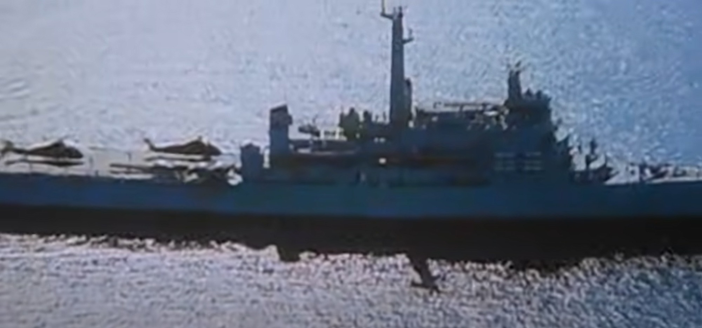 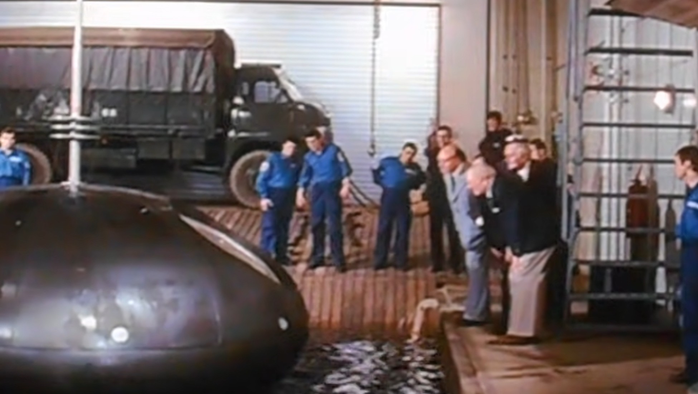 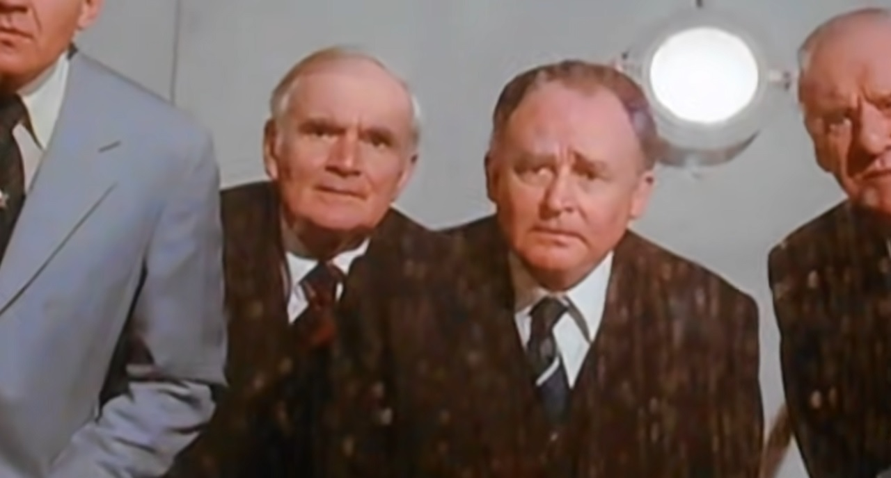 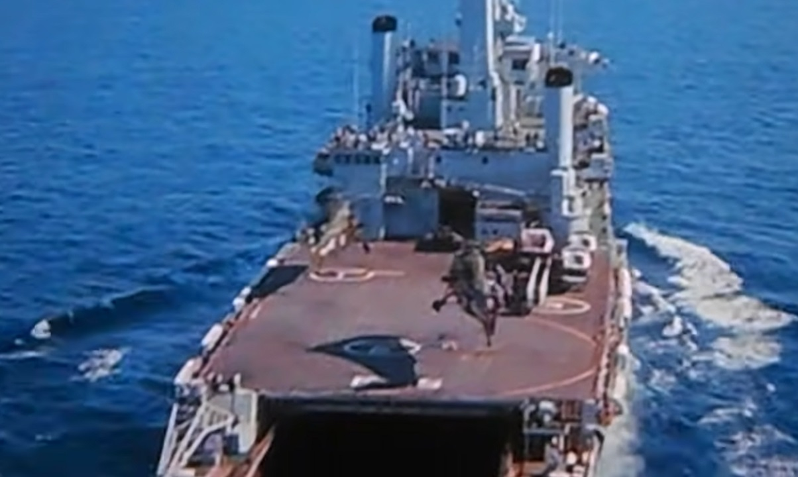
<갤러해드 경의 모험> San Carlos 상륙 작전은 아무래도 2척의 LPD가 주역을 맡았지만 그에 못지 않게 중요한 역할을 한 것이 6척의 Round Table-class LSL (Landing Ship Logistic), 즉 그냥 화물선들. 이 배들은 영국 국방부 소속이긴 하지만 해군 소속이 아님. 따라서 함명 앞에 HMS가 붙지 않고 RFA (Royal Fleet Auxiliary)가 붙으며, 선원들도 군인이 아니라 그냥 민간인. 이 만재배수량 5700톤, 최고속도 17노트의 질박한 화물선들이 Round Table급으로 이름 붙여진 것은 바로 '원탁의 기사'를 따서 붙인 것. 그래서 6척의 이름이 정말 Sir Galahad, Sir Lancelot, Sir Percivale 등이었음. 그런데 더 독특한 것은 이 6척의 선원들은 모조리 (당시 영국령이었던) 홍콩 출신 중국인들로 이루어졌던 것. 아마 이 홍콩 선원들은 이 RFA 선박들에 탈 때 정말 전쟁에 나가서 폭탄 세례를 받게 되리라고는 상상하지 않았을 듯. 이 원탁의 기사들 6척 중 가장 극적인 모험의 주인공은 갤러해드 경. 계속 병력과 물자를 하역하던 5월 24일, 이스라엘제 미라쥬 전투기인 IAI Dagger들이 날아들어 30mm 기관포 사격을 하더니 급기야 A-4 Skyhawk들 폭격을 해서 1천파운드 짜리 폭탄 하나가 갤러해드 경에게 명중. 그런데 익히 알려진 지나친 저고도에서의 폭탄 투하로 인해 폭탄이 불발됨. 이 폭탄은 폭탄 해체반이 꺼내어 고무보트에 실은 뒤 노를 저어 조금 떨어진 바다에 가서 고무보트 통째로 침몰시킴. RFA Sir Galahad는 보급선답게 이때 폭탄 완충재로 고무보트 바닥에 콘플레이크 봉지들을 잔뜩 깔았다고. 이렇게 운이 좋았던 갤러해드 경은 결국 6월 8일, 이번에는 포클랜드 섬 동쪽인 Fitzroy 해역에서 병력을 내려놓다가 또 스카이호크들의 폭격을 받았고, 이번에는 폭탄이 기폭되어 결국 나중에 자침됨. 48명의 선원과 병사들이 사망. 이때 선원들이 정말 홍콩 사람이었다는 것이 입증되는데, 추유남이라는 이름의 선원이 불 속에 갇힌 10명을 구조한 공로로 George 훈장을 받음.
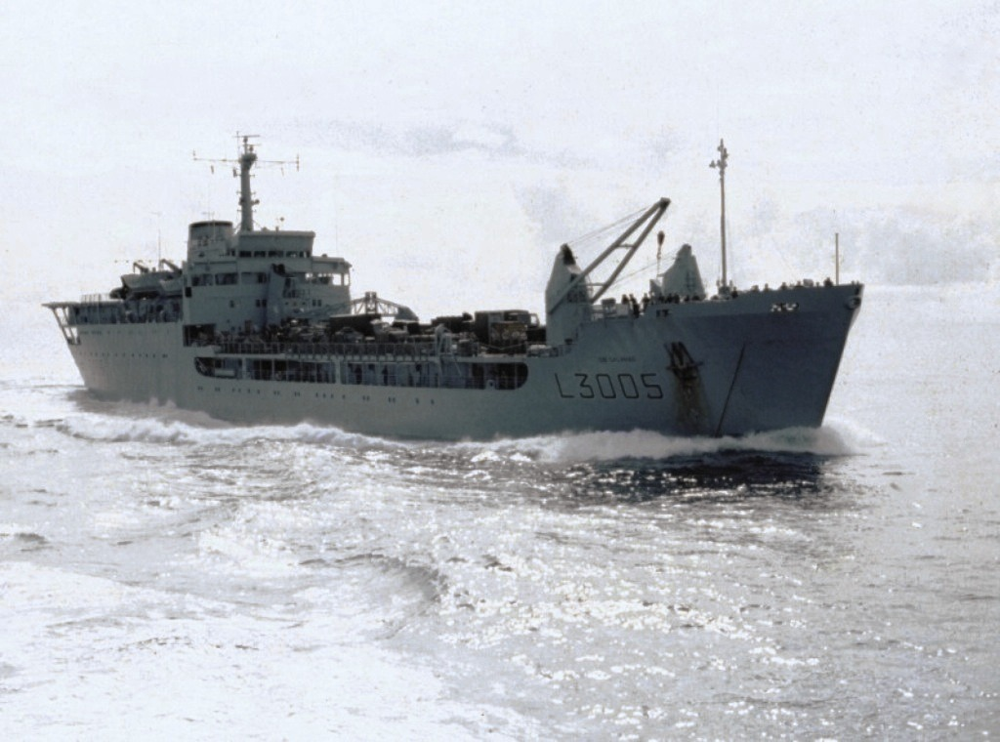 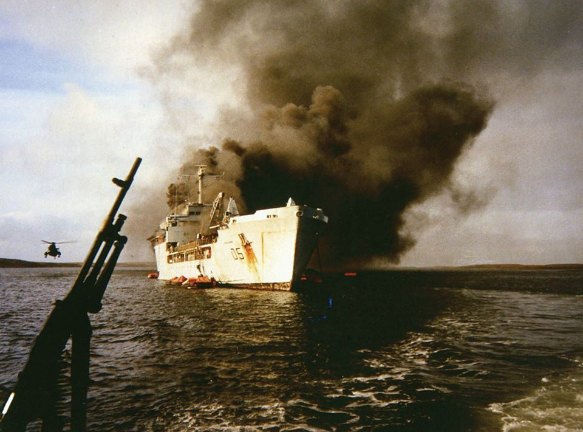
이 원탁의 기사들은 보급품을 다 내린 뒤 아르헨티나 포로들을 수용하는데도 사용됨. (아래 사진)
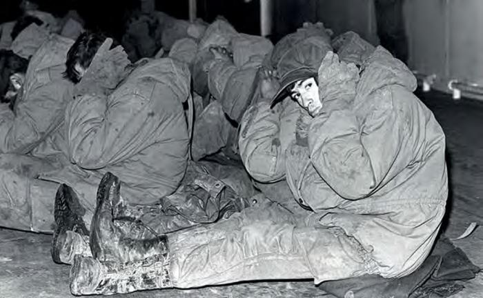
<기뢰가 있으면 어떻게 하지?>
상륙전에 대비한 가장 가성비 좋은 방어책은 바로 기뢰. 그러나 이것도 상륙 지점을 정확히 알 경우에나 그런 것이고, 어디에 상륙할지도 모르는데 의심가는 곳마다 기뢰 도배질을 할 수는 없음.
그러나 그건 아르헨티나 사정이고, 상륙을 해야 하는 영국군 입장에서는 과연 San Carlos 앞바다 및 거기에 진입하기 위해서 들어가야 하는 Falkland Sound (West 섬과 East 섬을 나누는 좁은 해협)에 기뢰가 몇 개라도 깔려있으면 진짜 난감. 그러니 어떻게든 기뢰가 깔려 있는지 여부를 미리 알아야 함.
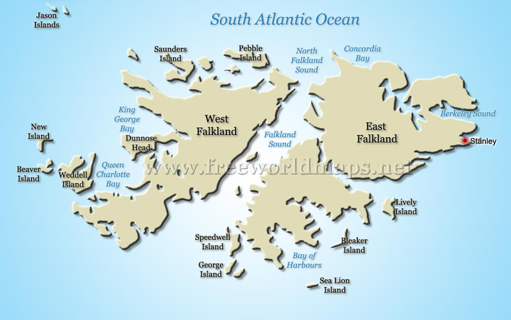
그렇다고 산 카를로스 앞바다에 괜히 보트들을 보내어 기뢰 설치 여부를 조사하는 것은 '우리 여기 상륙할 예정'임을 광고하는 행위니까 그럴 수도 없음. 그럼 어쩌나?
영국 원정대 사령관인 John Woodward 소장은 남자답게(?) 그냥 Type-21 프리깃함인 HMS Alacrity (3200톤, 32노트, 사진2)를 밀어넣음. 얼래크리티 호에게 그냥 무방비로 포클랜드 해협을 남에서 북으로 통과하도록 한 것. 얼래크리티 호의 승조원들은 정말 그야말로 실험실 모르모트 취급당한 것.
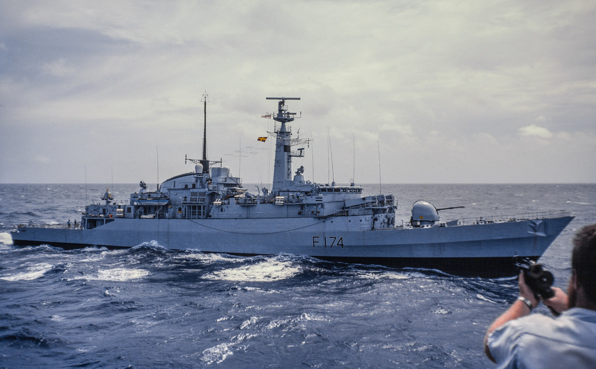
그런데 얼래크리티 호는 그렇게 해협을 통과하던 중 뜻밖에도 Port Howard 인근에서 아르헨티나군의 탄약과 보급품을 내리던 작은 수송선을 발견하고 격침. 생각치도 않은 전공을 세웠으나 이로 인해 영국군이 포클랜드 해협 어딘가에 관심이 있다는 것을 아르헨티나군이 눈치챔. 덕분에 나중에 3명의 영국군 헬리콥터 조종사들이 전사하는 상황이 발생...
<우연히 보게 된 그림> 앞서 언급했던 HMS Alacrity의 아르헨 수송선 격침 건 때문에 뭔가 그쪽 동네에 낌새가 이상하다고 느낀 아르헨티나 군사령부는 그 일대 몇몇 곳에 수색대를 파견. 산 카를로스는 포트 스탠리 기지에서 워낙 먼 곳이었으므로 아르헨티나 수색대는 4대의 헬기를 타고 산 카를로스에 도착. 그런데 수색을 해보니 별 건 없는데, 병사 하나가 비교적 최근에 깐 것이 분명한 영국군 초콜렛 포장지를 발견. 그래서 여기에 영국군이 다녀갔다고 확신. 실제로 영국 특수부대인 SBS (Special Boat Service) 대원들이 여기에 상륙하여 현장 답사를 하고 돌아갔음.
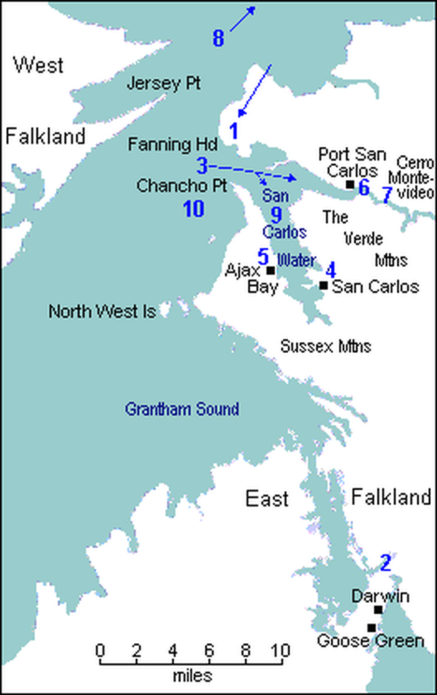
그러나 포트 스탠리의 아르헨티나 사령부는 산 카를로스 만에 영국군이 상륙할 가능성을 0에 수렴한다고 생각하고 별 신경을 쓰지 않음. 이유는 거기가 큰 배들이 들어오기엔 너무 좁고 얕다고 생각했기 때문. 그런데 그 일대를 수색하던 에스테반 중위가 산 카를로스 마을의 영국계 주민을 만나던 자리에서, 그 사람 거실 벽에 걸린 그림이 우연히 눈에 들어옴. 그림은 1939년 WW2 초기에 독일의 포켓 전함인 Graf Spee를 추격했던 중순양함 HMS Exeter (1만톤, 32노트, 아래 사진)가 바로 이 산 카를로스 만에 닻을 내리고 정박한 모습. 이걸 보고 아르헨티나 측은 '어? 산 카를로스 만이 중순양함이 정박할 정도로 충분히 깊네?'라고 처음으로 알게 됨. 그래서 결국 산 카를로스 만을 제압하는 고지인 Fanning Head에 60여명의 아르헨티나 분견대가 배치됨.
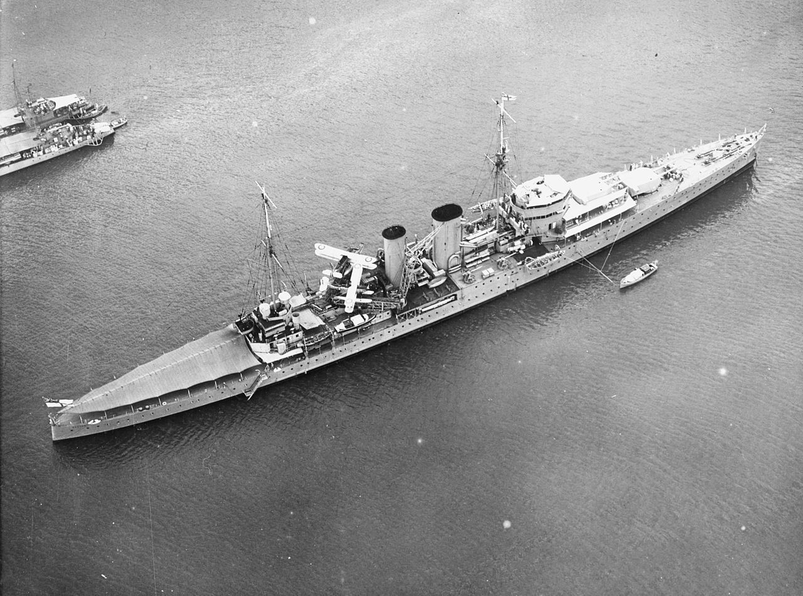
San Carlos (지도1)에 영국군이 상륙하는 것은 아르헨티나군으로서는 완전히 허를 찔린 것. 포트 스탠리에서 그렇게 먼, 완전히 반대쪽 해안에 상륙하리라고는 생각하지 않았기 때문.
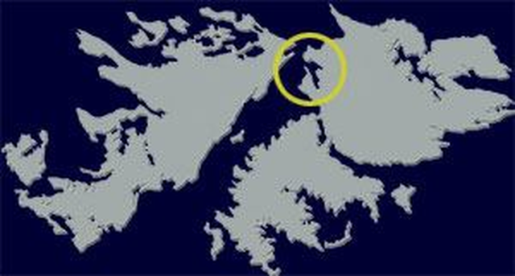
그렇다고 그쪽에 아르헨티나 지상군이 전혀 없었던 것은 아니고, 위에서 언급한 것처럼 HMS Alacrity의 출현으로 인해 혹시나 싶어 도중에 투입된 약 60여명 2개 소대가 박격포와 무반동총, 그리고 다수의 자동화기를 가지고 아래 지도 2의 Fanning Head에 주둔. 여기서는 San Carlos 만으로 들어오는 모든 선박을 감시 및 공격 가능.
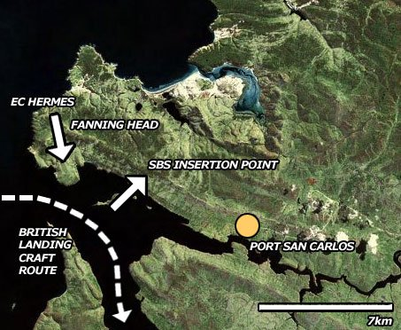
영국군은 여기에 2개 소개 정도가 있다는 것을 야간에 적외선 영상을 통해 파악. 상륙함대가 접근하기 전에 먼저 야간에 SBS (Special Boat Service) 특공대를 투입하여 쓸어버리기로 함. 그런데 이름과는 달리 SBS는 보트가 아니라 Wessex 헬리콥터로 투입됨. 이 SBS 팀에는 특별 임무를 띤 장교 2명이 들어있었는데, 1명은 Naval Gunfire Forward Observation (NGFO) 장교인 Hugh McManners 대위. 다른 하나는 스페인어 전공한 심리전 장교 Rod Bell 대위. 맥매너즈 대위의 임무는 인근 해역에서 지원해주는 구축한 HMS Antrim (사진3)의 4.5인치 포격을 유도하는 것. 맥매너즈의 유도를 받은 구축함의 포격이 한참동안 수행된 뒤, 살아남은 아르헨티나군에게 벨 대위가 접근하여 우렁찬 스페인어로 '살고 싶으면 항복하라'를 외침.
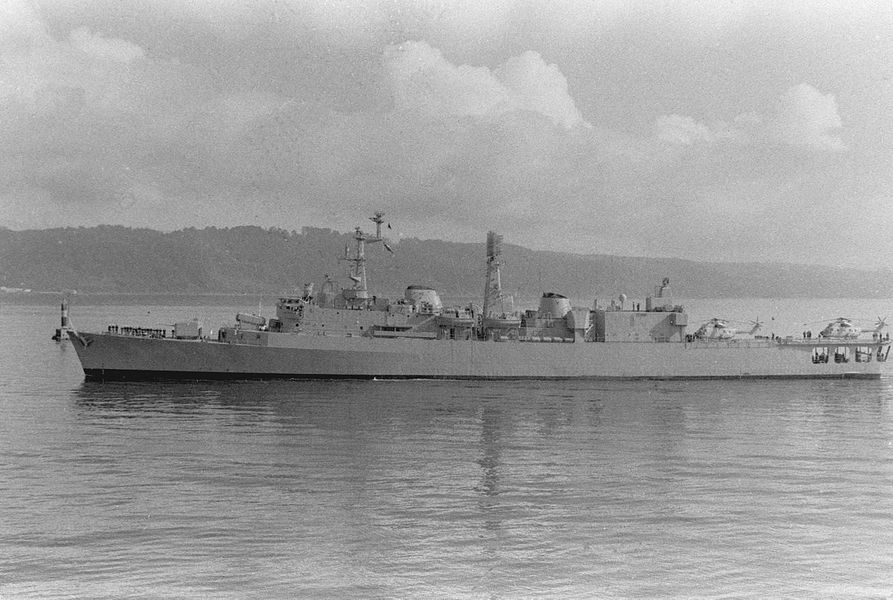
그러나 미국 전함들의 14인치 주포 포격을 잔뜩 받아도 해변의 일본군을 제압하지 못했는데 구축함의 4.5인치 포 2문의 포격으로 제압할 수 있을 리가... 벨 대위의 항복 권유에 대해 되돌아온 것은 아르헨티나군의 맹렬한 기관총 세례. 결국 치열한 총격전이 벌어지고 양쪽에서 견착식 무기와 무반동포 사격을 주고받다가, 결국 SBS가 수류탄을 던질 거리까지 접근하자 아르헨티나군이 비로소 항복. 그러나 항복한 것은 6명에 불과. 아르헨티나군은 11명 사망. 나머지 40여 명은 모두 도주. 영국 지상군의 피해는 가벼운 부상 외에는 없었으나 경공격 헬기 역할을 하던 영국 Gazelle 헬리콥터 (사진4) 2대가 아르헨티나군의 소화기 공격에 격추됨. 승무원 4명 중 3명이 사망.
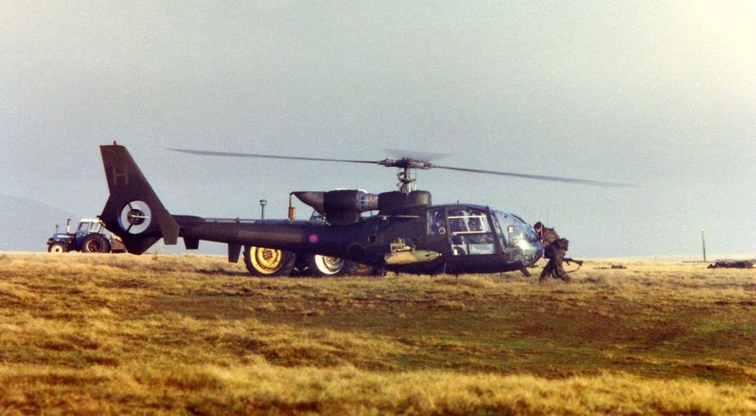
사로잡힌 아르헨티나 병사들 중 일부는 부상자들... 배경에 보이는 것은 SBS 투입에 사용되었다가 이젠 아르헨티나 포로 후송에 사용되는 Wessex 헬리콥터.
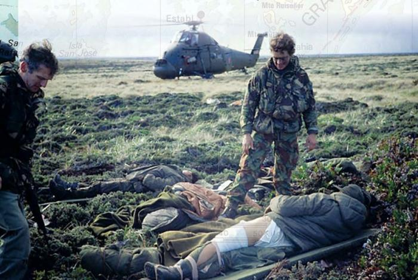